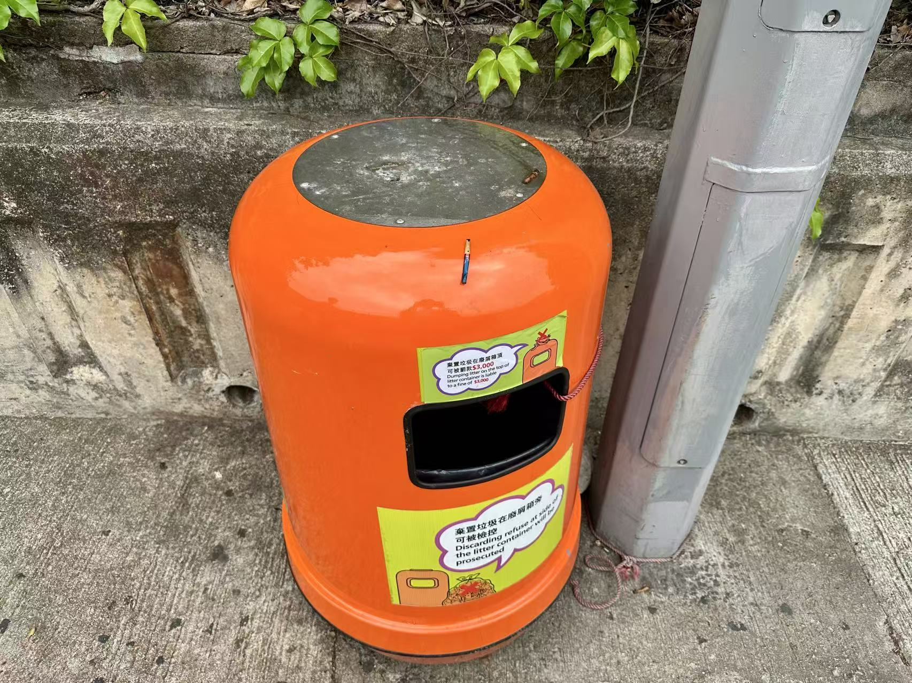

認知的鴻溝：當橙色垃圾桶變成「吸煙許可證」
在香港的街頭，如何判斷一個地方能否吸煙？對於許多煙民來說，答案似乎很簡單——找橙色垃圾桶。然而，這恰恰是當前控煙政策推行中面臨的最大認知鴻溝。
在 2026 年控煙新政實施後的第 4 個月，一份針對在港各個地區的居民，包括煙民與非煙民在內的《香港公共空間吸煙現狀與感知調查》資料揭示了一個令人擔憂的認知誤區：高達 46%的受訪者認為，帶有煙灰缸的橙色垃圾桶是「合法吸煙區的標誌」，另有 14%的人表示「不清楚界限」。只有 41%的受訪者正確地將其理解為「只是方便丟棄煙頭的設施，不代表可以吸煙」。
在煙民群體中，這種「默認許可」的認知或許更為根深蒂固。Isaac 是一位有著兩年煙齡的大二學生，他每天大約抽四到五支煙。當被問及日常吸煙地點的選擇時，他正站在位於學校某教學樓出入點附近的橙色垃圾桶旁點煙，他坦言：「我主要會在橙色垃圾桶旁邊抽，感覺看到橙色垃圾桶就差不多等於可以抽煙，」不過他也補充道，在醫院、學校和小孩子多的地方他不會吸煙。
53 歲的地盤工人王先生雖然表示非常清楚 2026 年更新後的控煙條例，也從來不會邊走邊抽煙，但他同樣認為看到橙色垃圾桶就意味著可以吸煙，只是他會儘量選擇人少的角落。
「垃圾桶有煙灰缸，如果不給抽煙為啥要放煙灰缸？」
事實上，在香港判斷能否抽煙，最準確的依據是「禁煙標誌」而非垃圾桶。
許多位於公共運輸交匯處、室內公共場所出口或學校門口的垃圾桶，儘管部分頂端設有煙灰缸，但其方圓數米甚至整個區域都已劃入法定禁煙範圍。康文署轄下的公園、公眾泳灘、體育場館，即便園內長椅旁有帶煙灰缸的垃圾桶，在園內吸煙仍屬違例。
隨著 2026 年禁煙區的再次擴大，這種基於垃圾桶的「默認許可」正面臨著越來越高的違法風險。
🗑 禁煙邊界知多少？
點擊以下場景，測試你是否清楚哪裡可以吸煙、哪裡不可以
根據 2026 年 1 月 1 日起實施的控煙新政，學校出入口 3 米範圍內已被列為法定禁煙區。在此範圍內吸煙即屬違例。
定額罰款：HK$3,000
根據 2026 年控煙新政，所有公共交通工具的輪候處（包括巴士站、小巴站、的士站等）均為法定禁煙區。排隊時吸煙亦被明令禁止。
定額罰款：HK$3,000
2026 年新政將醫院及診所出入口 3 米範圍列為法定禁煙區。即使門外有帶煙灰缸的垃圾桶，在此範圍內吸煙仍屬違例。
定額罰款：HK$3,000
自 2010 年起，康文署轄下的公園、公眾泳灘及體育場館已全面列為法定禁煙區。即使園內長椅旁有帶煙灰缸的垃圾桶，在園內吸煙仍屬違例。
定額罰款：HK$3,000
橙色垃圾桶不是合法吸煙區的標誌。如果垃圾桶位於法定禁煙區範圍內（如學校、醫院 3 米內、公共交通候車處等），在旁邊吸煙仍屬違例。只有在非禁煙區的普通街道上，才不構成違例。
判斷依據是「禁煙標誌」而非垃圾桶。
自 2009 年起，公眾自動扶梯及電梯系統及其 1 米範圍已被列為法定禁煙區。
定額罰款：HK$3,000
資料來源：衞生署控煙酒辦公室、香港吸煙與健康委員會 | 《吸煙(公眾衞生)條例》（第371章）
這種認知鴻溝不僅存在於對垃圾桶功能的誤解，更體現在對新政策的陌生。調查顯示，在全部受訪者中，27%對 2026 年實施的控煙新政表示「完全不知道」，32%表示「只聽說過一點，具體邊界很模糊」——兩者合計超過半數（59%）。而表示「非常清楚，吸煙/經過前會仔細留意附近的禁煙標誌」的受訪者僅占總體比例的 13%。
非煙民 Jolyne 的經歷也在一定程度上印證了這一發現。她坦言自己此前完全不知道橙色垃圾桶和吸煙範圍沒有關係，也沒有看到新的控煙政策的具體宣傳。「我之前完全沒有看到過類似的消息，」她說。
為了避免這種誤解繼續誘導煙民在禁煙區的垃圾桶旁吸煙，根據香港明報的報導，香港控煙酒辦公室已與食環署溝通，將部分位於禁煙區內的垃圾桶移走或將頂部的煙灰缸封死。

記者梁育萱攝
然而，調查結果在一定程度上顯示，這一措施的實際效果或許並不理想。在措施實施的頭三個月，整整一半的受訪者認為該措施「無效，煙民依然會在封死的頂部放置煙頭或直接扔在地上」，另有 32%的人表示「沒有注意到這個變化」，僅有 9%的人認為該措施有效減少了該處的吸煙者。還有 9%的人認為該措施反而導致煙民轉移到附近其他地方吸煙。
「為保持市容整潔，本署在街道上設置約 11,100 個廢屑箱和約 2,000 個狗糞收集箱，由員工及承辦商工人至少每天清理 1 次。」